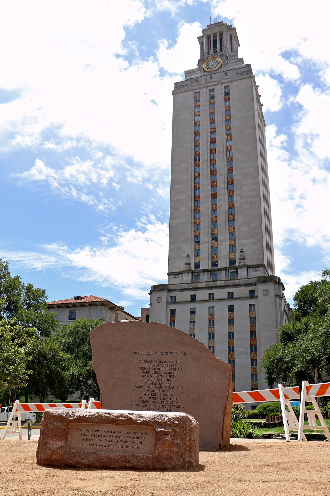

A new UT Tower shooting memorial was placed on July 23 by UT’s Turtle Pond replacing the original plaque memorial. The memorial will be unveiled in a rededication ceremony on Aug. 1 at the Tower Garden.
He scooted back carefully, dragging his feet across the black sand, focusing his Nikon camera on the polished face.
Alfred McAlister studied the camera’s screen, making sure the entire 6-foot 3-inch tall granite boulder fit in the picture. The names of the 17 victims from the UT Tower shooting had been sand blasted onto the granite.
On Aug. 1, 1966, he hid behind a car on the Drag as carnage unfolded around him. On 23rd street two friends, Claudia Rutt and Paul Sonntag, lay dead. His childhood friend, Tom Eckman, lay dead in the main mall.
Now, almost 50 years later, he stared at their inscribed names.
“It’s just weird,” said McAlister, a Plan II Honors professor. “We made our first model of this almost two years ago.”
The 11,700 pound granite stone is the new UT Tower shooting memorial. In August 2014, McAlister — along with Claire Wilson James, Forrest Preece, James Bryce, Artly Snuff, Cyndi Taylor Krier, Clif Drummond and Hannah Whisenant — formed the Tower Memorial Enhancement Group. They proposed a new memorial replace the original: a nine-by-14-inch plaque by UT’s Turtle Pond.
The new memorial was placed on July 23 and will officially be unveiled on Aug. 1, exactly 50 years after engineering student Charles Whitman killed 15 people and wounded 34.
McAlister passed his fingers over the rough and jagged edges, almost wanting to make sure the boulder was real.
“It’s strange to see something you’ve only seen in your mind’s eye,” he said.
OTHER schools, like Columbine High School and Virginia Tech, displayed memorials honoring the victims of their shootings, but for 33 years, the bullet holes Whitman left around campus were the only physical reminders of the fourth-deadliest school shooting in U.S history. In 1999, Texas dedicated the Turtle Pond as a place to honor those affected by the shooting. In 2003, former UT President Larry R. Faulkner unveiled plans for an elaborate memorial costing more than 1 million dollars and be unveiled on Aug. 1, 2004. The memorial was never completed. In 2007, UT placed a plaque at the Turtle Pond as a memorial.
Claire Wilson James was living in Nebraska when she heard about it. She was eight months pregnant in 1966 when Whitman shot her and her boyfriend Tom Eckman, killing Eckman and the unborn baby. She imagined running her fingers over Tom’s name and the baby’s. But when she saw the memorial, the plaque was just inscribed with a lengthy message.
“I couldn’t think of anything more beautiful,” James said. “Then when I actually went there, the baby’s name was not there and I had hoped the names would be there.”
ON the 48th anniversary of the shooting, UT documentary group Students of the World organized a living memorial at the Main Mall. Students from the group held framed photos of each victim and gave a short speech about each one. Many survivors, including Alfred McAlister, Claire Wilson James, Forrest Preece, James Bryce, Artly Snuff, Cyndi Taylor Krier and Hannah Whisenant, attended.
The group of students and survivors walked from the Main Mall to the Turtle Pond. At the turtle pond, McAlister made closing remarks to the assembled group about how “survivors’ guilt” begs memorialization. He then proposed the formation of The Tower Memorial Enhancement Group. In September, they sent plans for a memorial upgrade to former UT President William C. Powers.
“We seek enhancement of the memorialization for victims of the Aug. 1, 1966 tragedy at The University of Texas,” the group wrote in a formal statement submitted to the University. “The current plaque at the Turtle Pond represents a sincere effort by the University to recognize this terrible event. But we want a more substantial memorial to be made, at least displaying names of the victims who had their lives cut short that day. Our goal is to have this enhanced memorialization in place by: August 1, 2016.”
Powers directed the the Division of Diversity and Community Engagement to steward the initiative on UT’s behalf. Dr. Gregory Vincent, vice president of the Division, appointed associate vice president for community and external relations Erica Saenz to collaborate with the group on a new memorial.
“We really wanted to work with them to come up with ideas to propose to the president for consideration,” Saenz said. “So they started thinking about local Texas materials they wanted to use for the monument.”
The Tower Memorial Group, with the Division of Diversity and Community Engagement, met in the Fall of 2014 and discussed design options for the memorial, which they wanted made from natural material.
“Our preferred design was discs embedded in walls or on the ground, like on the drag where my two friends died in front of the Co-op,” McAlister said. “[We] wanted the embedded names in disks where people fell.”
The group submitted a three-part design to UT in December 2014: the etched granite disks where the victims fell, a natural granite boulder with the victims’ names etched on a polished face and a Bald Cypress tree placed at the head of the lower pond. UT denied the granite disks but approved the boulder and the trees.
In August 2015, McAlister, Bryce, Sandra Connors and John Sparks, traveled to a quarry in Fredericksburg. They looked at more than 25 stones before Sparks showed them a sunset red granite boulder, with fresh breaks and natural seams, he quarried out a few years ago.
“I think everybody that saw it,” Sparks said, “realized that that was the one.”
Rodney Molitor, President of Cook-Walden Funeral Homes and Cemeteries, offered to pay for the stone and the bench after meeting Saenz in February 2016. Charles Walden, the former owner of Cook-Walden, was present during the shooting and used Cook’s hearses as ambulances. He died in 2014. “Our job is to carry on [Walden’s] legacy and, of course, he would say it and I will say it, this monument is not about him,” Molitor said. “It’s about all of those who were affected on that day.”
THEY had pictured this two years ago, and now it was real.
At 8 a.m. Saturday July 23, Snuff, Bryce, Preece, Saenz, Molitor and other faculty members at UT circled around the Tower pond.
The sun shined. The wind blew. The tower rang.
At 8:15 a.m., a white crane lifted the 11,700 pound sunset red granite memorial to the concrete slab it will sit on. The bench was placed sometime last week.
Pictures were taken. Videos were recorded. The process took about an hour; everyone made sure the tower was lined up behind the memorial. A blue tarp covering the polished face was removed, revealing the date, the names and the message from the 2007 memorial.
“It’s kind of emotional,” Preece said.
Everyone checked the names weren’t misspelled, from Thomas Aquinas Ashton down to Baby Boy Wilson.
James will see the rock for the first time on Aug. 1. After 50 years, she can can run her fingers over Eckman’s name, as well as her baby’s. She says the memorial is an effort at peace and reconciliation.
“The sacredness is not in the rock itself,” James said, “but in the fact that people will remember.”
After the memorial was placed, Snuff walked up to it and stared at the names. Two grabbed his attention: Claudia Rutt and Paul Bolton Sonntag. They were Snuff’s friends too – the three of them graduated from Austin High School in 1966. Rutt and Sonntag were engaged that summer. They were killed looking at engagement rings on the drag. Snuff ran his fingers over their names.
The sun shined. The wind blew. The tower rang.
The memorial will be officially unveiled at a rededication ceremony on Monday, Aug. 1. The event will begin at 11:40 a.m. at the Main Mall in front of the Tower.